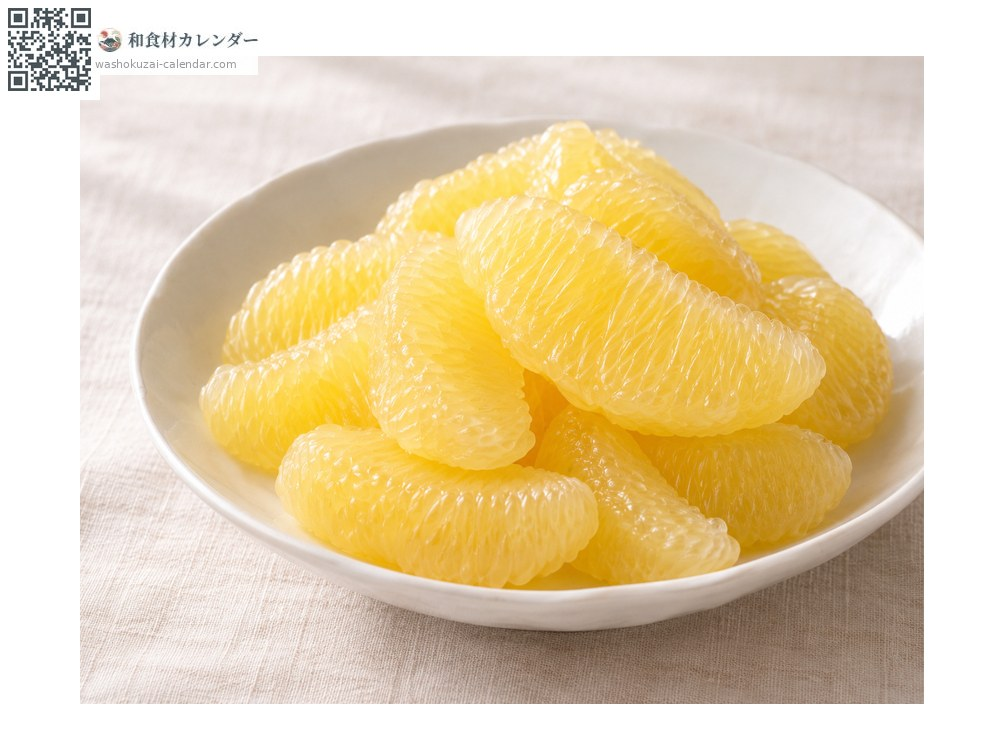
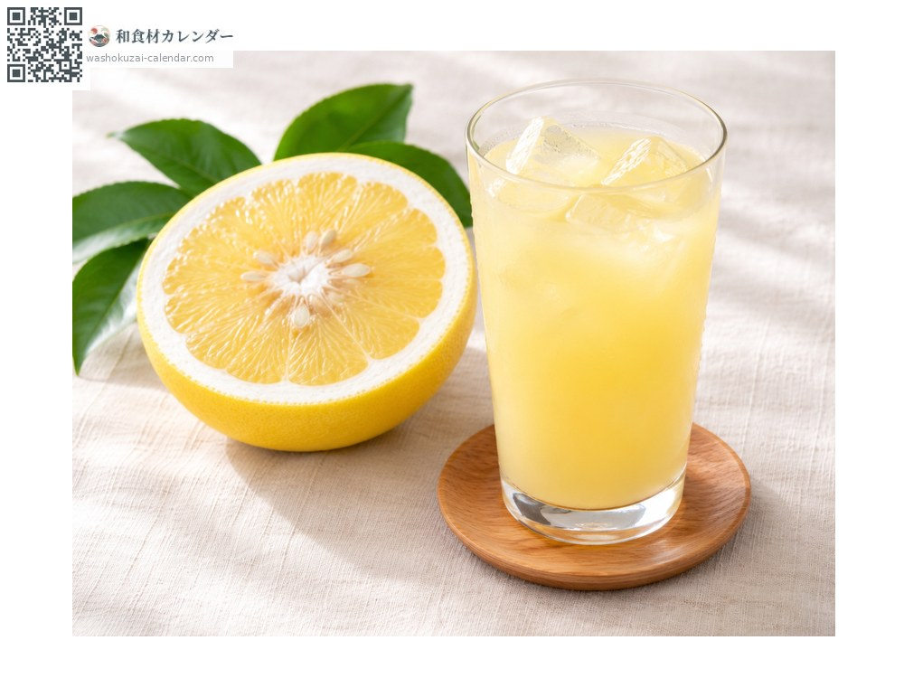
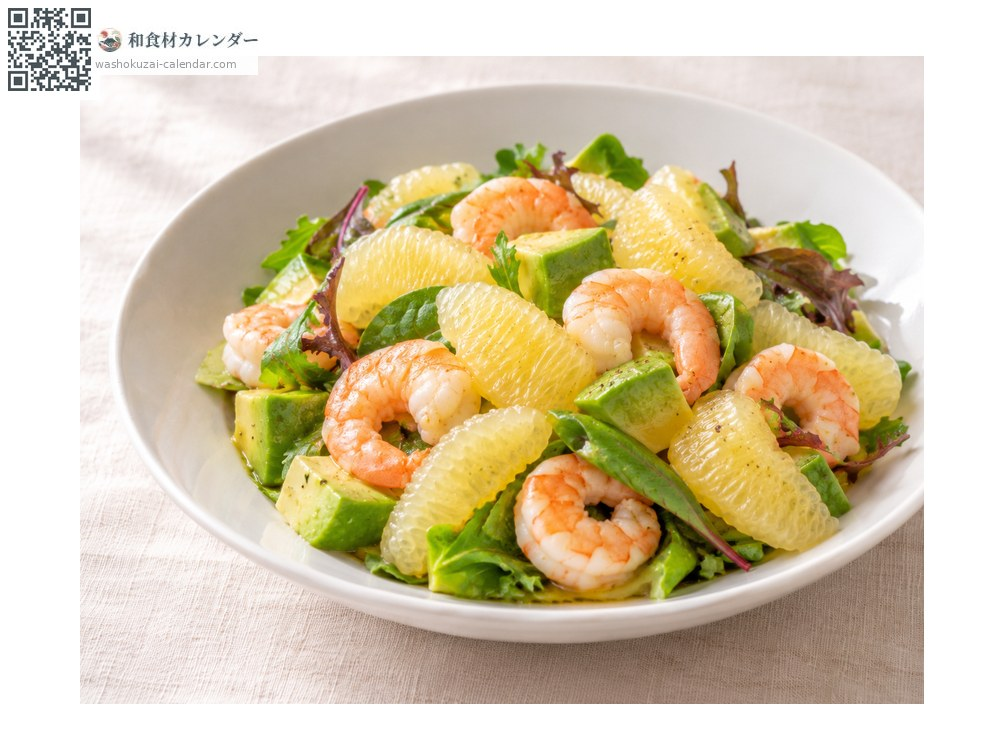
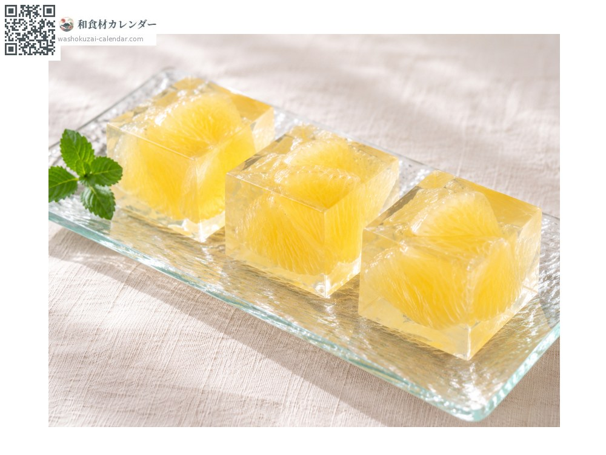

ผลไม้
ส้มคาวาจิบังกัง
河内晩柑 かわちばんかん kawachibankan
ชื่ออื่นkawachibankan
อร่อยที่สุดในเดือน เม.ย., พ.ค., มิ.ย., ก.ค.

ช่วงที่อร่อยที่สุด
ม.ค.
ก.พ.
มี.ค.
เม.ย.
พ.ค.
มิ.ย.
ก.ค.
ส.ค.
ก.ย.
ต.ค.
พ.ย.
ธ.ค.
ช่วงอร่อยที่สุดมีจำหน่าย
วิธีปรุง

ทานสด
แกะเนื้อออกจากเยื่อ ฉ่ำน้ำและสดชื่น

น้ำส้ม
คั้นแล้วใส่น้ำแข็ง ขมน้อย

สลัด
จัดคู่กับกุ้งและอะโวคาโด

วุ้นคันเท็น
ทำน้ำส้มพร้อมกลีบให้แข็งตัวด้วยคันเท็น
วิธีเลือก
เปลือกสีเหลืองอ่อน ตึง ยกแล้วรู้สึกหนัก
วิธีเก็บรักษา
เก็บในที่เย็นที่อุณหภูมิห้อง ฤดูร้อนให้ใส่ถุงแล้วเก็บในช่องผักของตู้เย็น
แหล่งผลิตหลัก
เกร็ดน่ารู้
เป็นญาติของส้มโอ พบราวปี 1905 ที่เมืองคาวาจิ จังหวัดคูมาโมโตะ (ปัจจุบันเป็นส่วนหนึ่งของเมืองคูมาโมโตะ) ปล่อยให้ผลอยู่บนต้นข้ามฤดูหนาวแล้วเก็บเกี่ยวตั้งแต่ฤดูใบไม้ผลิถึงฤดูร้อน รสชาติสดชื่นจนได้ชื่อว่า "เกรปฟรุตญี่ปุ่น" วางขายในชื่อที่ต่างกันไปตามแหล่งปลูก